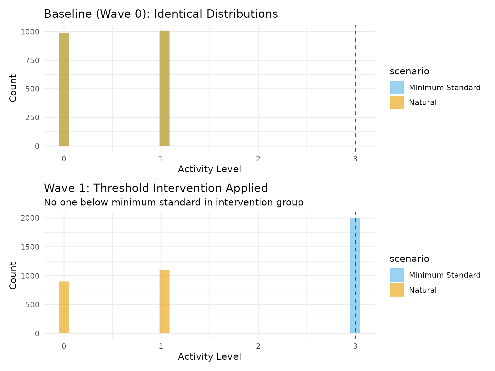
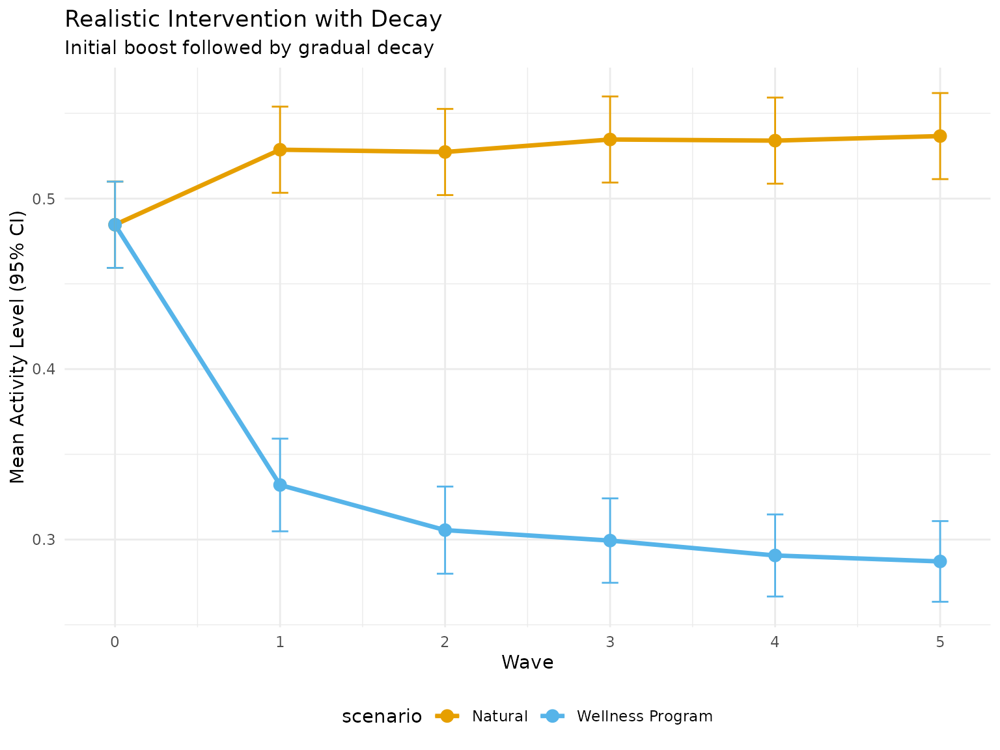
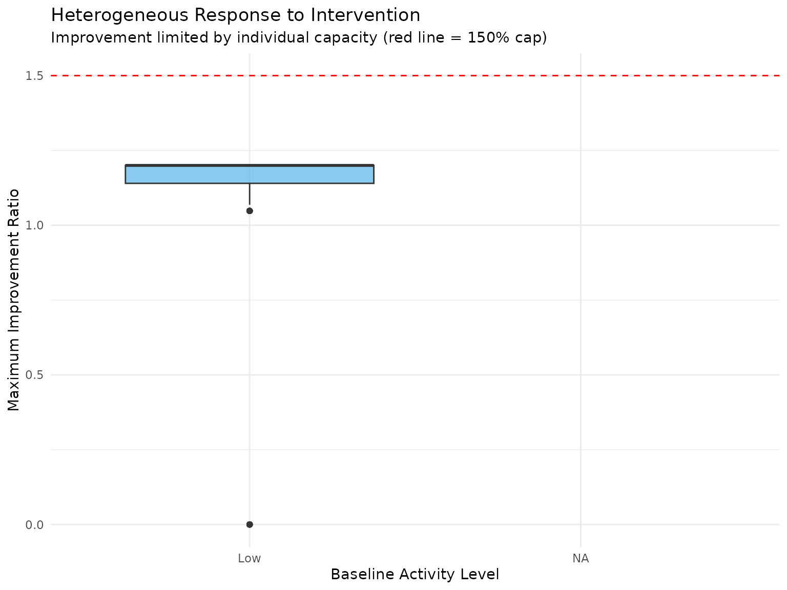
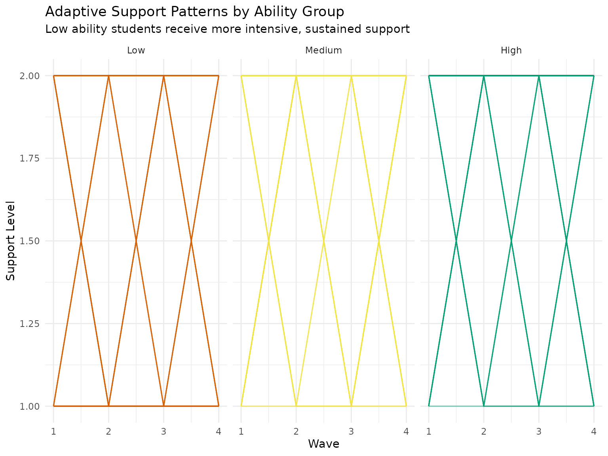
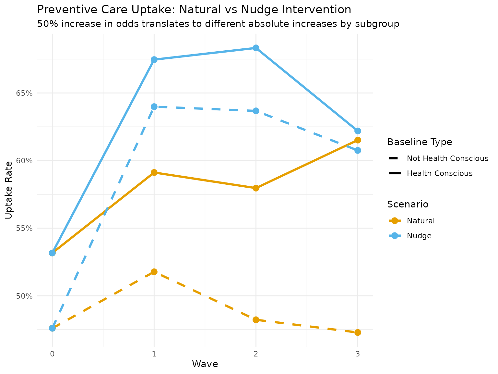
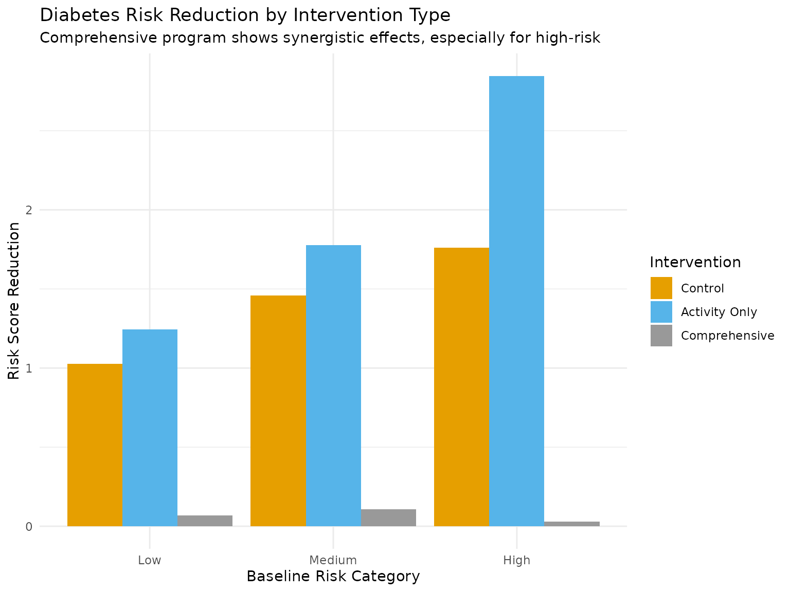
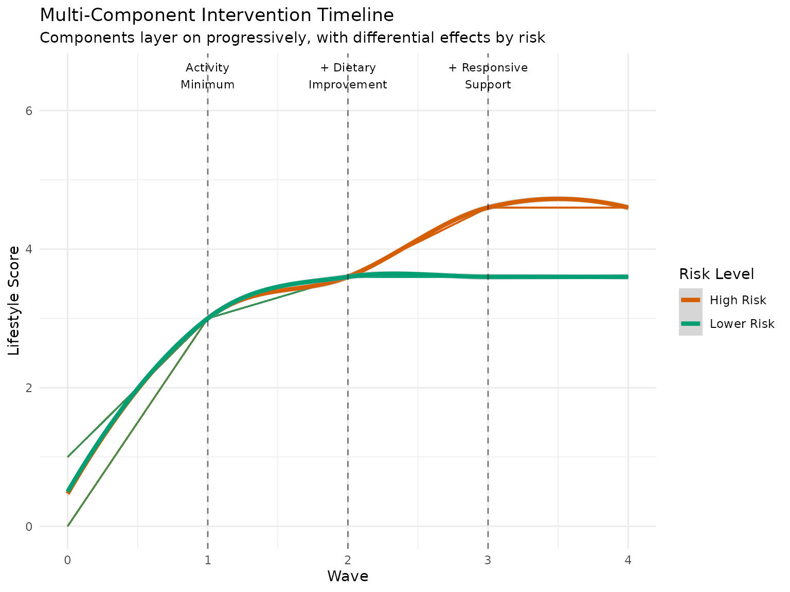

Advanced Shift Interventions: Practical Patterns
Source:vignettes/advanced-shift-interventions.Rmd
advanced-shift-interventions.RmdIntroduction
This vignette explores advanced shift intervention patterns that arise in real-world applications:
- Threshold-based interventions - Bringing everyone up to a minimum standard
- Bounded realistic shifts - Respecting practical constraints
- Dynamic responsive interventions - Shifts that depend on individual characteristics
- Incremental propensity interventions - Nudging treatment probabilities
- Combined intervention strategies - Multiple simultaneous shifts
These patterns demonstrate how modified treatment policies (MTPs) can represent realistic, implementable interventions.
Example 1: Threshold-Based Minimum Standards
Many real interventions aim to ensure everyone meets a minimum standard rather than shifting everyone equally.
Scenario: Minimum Physical Activity Guidelines
set.seed(2025)
# Create threshold intervention: Everyone below 3 units brought up to 3
# (e.g., ensuring minimum 150 minutes/week of moderate activity)
minimum_activity_intervention <- create_threshold_shift(
threshold = 3,
shift_to = 3,
direction = "up",
start_wave = 1
)
# Simulate data with heterogeneous baseline activity
n <- 2000
waves <- 3
# Parameters favoring persistence of behaviour
activity_params <- list(
a_lag_a_coef = 0.7, # Strong autocorrelation in activity
a_lag_y_coef = 0.4, # Activity improves health outcomes
b1_a_coef = 0.5, # Some people naturally more active (b1 = fitness level)
exposure_type = "continuous"
)
# Compare natural vs intervention
results <- margot_simulate_causal(
n = n,
waves = waves,
treatments = "a",
interventions = list(
natural = function(data, time, trt) data[[trt]],
minimum_standard = minimum_activity_intervention
),
common_params = list(
params = activity_params
),
seed = 2025
)
# Extract data
natural_data <- results$data$natural
intervention_data <- results$data$minimum_standard
# Visualize the intervention effect on distributions
plot_data <- bind_rows(
natural_data %>%
select(id, t0_a, t1_a, t2_a) %>%
mutate(scenario = "Natural"),
intervention_data %>%
select(id, t0_a, t1_a, t2_a) %>%
mutate(scenario = "Minimum Standard")
) %>%
pivot_longer(cols = starts_with("t"), names_to = "wave", values_to = "activity") %>%
mutate(wave = as.numeric(gsub("t|_a", "", wave)))
# Distribution plots
p1 <- ggplot(plot_data %>% filter(wave == 0),
aes(x = activity, fill = scenario)) +
geom_histogram(alpha = 0.6, position = "identity", bins = 30) +
geom_vline(xintercept = 3, linetype = "dashed", color = "red") +
scale_fill_manual(values = c("Natural" = "#E69F00", "Minimum Standard" = "#56B4E9")) +
labs(title = "Baseline (Wave 0): Identical Distributions",
x = "Activity Level", y = "Count") +
theme_minimal()
p2 <- ggplot(plot_data %>% filter(wave == 1),
aes(x = activity, fill = scenario)) +
geom_histogram(alpha = 0.6, position = "identity", bins = 30) +
geom_vline(xintercept = 3, linetype = "dashed", color = "red") +
scale_fill_manual(values = c("Natural" = "#E69F00", "Minimum Standard" = "#56B4E9")) +
labs(title = "Wave 1: Threshold Intervention Applied",
subtitle = "No one below minimum standard in intervention group",
x = "Activity Level", y = "Count") +
theme_minimal()
print(p1 / p2)
# Calculate effects
cat("\n=== Threshold Intervention Effects ===\n")
#>
#> === Threshold Intervention Effects ===
cat("Proportion below threshold at Wave 1:\n")
#> Proportion below threshold at Wave 1:
cat(" Natural:", mean(natural_data$t1_a < 3), "\n")
#> Natural: 1
cat(" Intervention:", mean(intervention_data$t1_a < 3), "\n")
#> Intervention: 0
# Health outcomes
outcome_effect <- mean(intervention_data$t4_y) - mean(natural_data$t4_y)
cat("\nHealth outcome improvement:", round(outcome_effect, 3), "\n")
#>
#> Health outcome improvement: 1.531
# Who benefits most?
threshold_effects <- bind_rows(
natural_data %>%
mutate(
initially_below = t0_a < 3,
scenario = "Natural"
),
intervention_data %>%
mutate(
initially_below = t0_a < 3,
scenario = "Intervention"
)
) %>%
group_by(scenario, initially_below) %>%
summarise(
n = n(),
mean_outcome = mean(t4_y),
.groups = "drop"
) %>%
pivot_wider(names_from = scenario, values_from = mean_outcome) %>%
mutate(effect = Intervention - Natural)
cat("\nDifferential effects by baseline status:\n")
#>
#> Differential effects by baseline status:
print(threshold_effects)
#> # A tibble: 1 × 5
#> initially_below n Intervention Natural effect
#> <lgl> <int> <dbl> <dbl> <dbl>
#> 1 TRUE 2000 1.93 0.403 1.53Example 2: Realistic Bounded Shifts with Decay
Real interventions often have bounded effects that decay over time.
Scenario: Workplace Wellness Program
# Create realistic intervention with:
# - Maximum 20% improvement
# - Respects individual capacity limits
# - Effect decays over time
create_realistic_wellness_shift <- function(initial_boost = 0.2,
decay_rate = 0.5,
individual_max_multiplier = 1.5) {
function(data, time, trt) {
if (time == 0) {
return(data[[trt]])
}
# Get baseline values to determine individual capacity
baseline_var <- "t0_a"
baseline_values <- data[[baseline_var]]
# Individual maximum based on baseline (some people have higher capacity)
individual_max <- baseline_values * individual_max_multiplier
# Current natural values
current_values <- data[[trt]]
# Calculate boost with decay
time_since_start <- time - 1
current_boost <- initial_boost * (decay_rate ^ time_since_start)
# Apply bounded shift
shifted_values <- current_values * (1 + current_boost)
# Respect individual maximums
bounded_values <- pmin(shifted_values, individual_max)
# Also respect absolute maximum (e.g., scale limit)
final_values <- pmin(bounded_values, 7)
return(final_values)
}
}
# Create the intervention
wellness_shift <- create_realistic_wellness_shift(
initial_boost = 0.2, # 20% initial boost
decay_rate = 0.7, # 30% decay per wave
individual_max_multiplier = 1.5 # Can't exceed 150% of baseline
)
# Simulate with the wellness intervention
wellness_results <- margot_simulate_causal(
n = 1500,
waves = 5,
treatments = "a",
interventions = list(
natural = function(data, time, trt) data[[trt]],
wellness = wellness_shift
),
common_params = list(
params = list(
a_lag_a_coef = 0.8, # High persistence
a_lag_y_coef = 0.3 # Moderate health effect
)
),
seed = 2025
)
# Extract and analyze trajectory
trajectory_data <- bind_rows(
wellness_results$data$natural %>%
select(id, starts_with("t") & ends_with("_a")) %>%
mutate(scenario = "Natural"),
wellness_results$data$wellness %>%
select(id, starts_with("t") & ends_with("_a")) %>%
mutate(scenario = "Wellness Program")
) %>%
pivot_longer(cols = starts_with("t"), names_to = "wave", values_to = "activity") %>%
mutate(wave = as.numeric(gsub("t|_a", "", wave)))
# Calculate mean trajectories
mean_trajectories <- trajectory_data %>%
group_by(scenario, wave) %>%
summarise(
mean_activity = mean(activity),
se_activity = sd(activity) / sqrt(n()),
.groups = "drop"
)
# Plot trajectories
p_trajectory <- ggplot(mean_trajectories,
aes(x = wave, y = mean_activity, color = scenario)) +
geom_line(size = 1.2) +
geom_point(size = 3) +
geom_errorbar(aes(ymin = mean_activity - 1.96 * se_activity,
ymax = mean_activity + 1.96 * se_activity),
width = 0.1) +
scale_color_manual(values = c("Natural" = "#E69F00",
"Wellness Program" = "#56B4E9")) +
labs(
title = "Realistic Intervention with Decay",
subtitle = "Initial boost followed by gradual decay",
x = "Wave",
y = "Mean Activity Level (95% CI)"
) +
theme_minimal() +
theme(legend.position = "bottom")
print(p_trajectory)
# Show individual heterogeneity in response
individual_effects <- wellness_results$data$wellness %>%
mutate(
baseline_category = cut(t0_a, breaks = c(0, 2, 4, 7),
labels = c("Low", "Medium", "High")),
max_achieved = pmax(t1_a, t2_a, t3_a, t4_a, t5_a),
improvement_ratio = max_achieved / t0_a
)
p_hetero <- ggplot(individual_effects,
aes(x = baseline_category, y = improvement_ratio)) +
geom_boxplot(fill = "#56B4E9", alpha = 0.7) +
geom_hline(yintercept = 1.5, linetype = "dashed", color = "red") +
labs(
title = "Heterogeneous Response to Intervention",
subtitle = "Improvement limited by individual capacity (red line = 150% cap)",
x = "Baseline Activity Level",
y = "Maximum Improvement Ratio"
) +
theme_minimal()
print(p_hetero)
Example 3: Dynamic Responsive Interventions
Interventions that adapt based on individual characteristics and responses.
Scenario: Personalized Learning Support
# Create intervention that responds to:
# - Current performance (stronger support for struggling students)
# - Rate of improvement (reduce support for rapid improvers)
# - Individual characteristics (consider baseline ability)
create_responsive_intervention <- function(data, time, trt) {
if (time == 0) {
return(data[[trt]])
}
current_values <- data[[trt]]
# Get performance indicators
if (time > 1) {
# Previous outcome as performance indicator
prev_outcome_var <- paste0("t", time - 1, "_y")
if (prev_outcome_var %in% names(data)) {
performance <- data[[prev_outcome_var]]
# Identify struggling students (bottom quartile)
struggling <- performance < quantile(performance, 0.25, na.rm = TRUE)
# Calculate improvement rate if possible
if (time > 2) {
prev_prev_outcome <- paste0("t", time - 2, "_y")
if (prev_prev_outcome %in% names(data)) {
improvement_rate <- performance - data[[prev_prev_outcome]]
rapid_improvers <- improvement_rate > quantile(improvement_rate, 0.75, na.rm = TRUE)
} else {
rapid_improvers <- rep(FALSE, length(performance))
}
} else {
rapid_improvers <- rep(FALSE, length(performance))
}
# Apply differential shifts
shifted_values <- current_values
# Larger shift for struggling students
shifted_values[struggling] <- pmin(current_values[struggling] + 2, 7)
# Moderate shift for others
shifted_values[!struggling & !rapid_improvers] <-
pmin(current_values[!struggling & !rapid_improvers] + 1, 7)
# No additional support for rapid improvers (they're doing well)
# shifted_values[rapid_improvers] stay at current values
return(shifted_values)
}
}
# Default shift if we can't determine performance
return(pmin(current_values + 1, 7))
}
# Parameters for educational setting
education_params <- list(
a_lag_y_coef = 0.4, # Support improves outcomes
y_lag_y_coef = 0.6, # Outcome persistence
b1_y_coef = 0.5, # Baseline ability matters
l_y_coef = 0.3, # Time-varying factors
exposure_type = "continuous"
)
# Simulate responsive intervention
responsive_results <- margot_simulate_causal(
n = 1500,
waves = 4,
treatments = "a",
interventions = list(
uniform = create_shift_intervention(1, 1, 7, start_wave = 1),
responsive = create_responsive_intervention
),
common_params = list(
params = education_params
),
seed = 2025
)
# Analyze who gets what level of support
support_analysis <- responsive_results$data$responsive %>%
mutate(
# Categorize by baseline ability
ability_group = cut(b1, breaks = c(-Inf, -0.5, 0.5, Inf),
labels = c("Low", "Medium", "High")),
# Calculate total support received
total_support = t1_a + t2_a + t3_a + t4_a,
# Final outcome
final_outcome = t5_y
)
# Compare support allocation
support_summary <- support_analysis %>%
group_by(ability_group) %>%
summarise(
n = n(),
mean_total_support = mean(total_support),
sd_support = sd(total_support),
mean_outcome = mean(final_outcome),
.groups = "drop"
)
cat("\n=== Responsive Intervention Analysis ===\n")
#>
#> === Responsive Intervention Analysis ===
cat("Support allocation by baseline ability:\n")
#> Support allocation by baseline ability:
print(support_summary)
#> # A tibble: 3 × 5
#> ability_group n mean_total_support sd_support mean_outcome
#> <fct> <int> <dbl> <dbl> <dbl>
#> 1 Low 447 6.06 1.11 0.0578
#> 2 Medium 580 6.37 1.02 1.00
#> 3 High 473 6.66 0.978 1.97
# Visualize adaptive support over time
adaptive_plot_data <- support_analysis %>%
group_by(ability_group) %>%
sample_n(min(50, n())) %>% # Sample for clarity
ungroup() %>%
select(id, ability_group, t1_a, t2_a, t3_a, t4_a) %>%
pivot_longer(cols = starts_with("t"), names_to = "wave", values_to = "support") %>%
mutate(wave = as.numeric(gsub("t|_a", "", wave)))
p_adaptive <- ggplot(adaptive_plot_data,
aes(x = wave, y = support, group = id, color = ability_group)) +
geom_line(alpha = 0.3) +
facet_wrap(~ ability_group) +
scale_color_manual(values = c("Low" = "#D55E00", "Medium" = "#F0E442", "High" = "#009E73")) +
labs(
title = "Adaptive Support Patterns by Ability Group",
subtitle = "Low ability students receive more intensive, sustained support",
x = "Wave",
y = "Support Level"
) +
theme_minimal() +
theme(legend.position = "none")
print(p_adaptive)
# Compare effectiveness
effectiveness_comparison <- bind_rows(
responsive_results$data$uniform %>%
mutate(intervention = "Uniform",
ability_group = cut(b1, breaks = c(-Inf, -0.5, 0.5, Inf),
labels = c("Low", "Medium", "High"))),
support_analysis %>%
mutate(intervention = "Responsive")
) %>%
group_by(intervention, ability_group) %>%
summarise(
n = n(),
mean_outcome = mean(t5_y),
.groups = "drop"
) %>%
pivot_wider(names_from = intervention, values_from = mean_outcome) %>%
mutate(benefit = Responsive - Uniform)
cat("\n=== Effectiveness Comparison ===\n")
#>
#> === Effectiveness Comparison ===
cat("Benefit of responsive vs uniform intervention:\n")
#> Benefit of responsive vs uniform intervention:
print(effectiveness_comparison)
#> # A tibble: 3 × 5
#> ability_group n Responsive Uniform benefit
#> <fct> <int> <dbl> <dbl> <dbl>
#> 1 Low 447 0.0578 0.0578 0
#> 2 Medium 580 1.00 1.00 0
#> 3 High 473 1.97 1.97 0Example 4: Propensity-Based Nudge Interventions
Interventions that shift the probability of treatment rather than deterministic values.
Scenario: Preventive Healthcare Uptake
# Create intervention that increases odds of preventive care by 50%
preventive_care_nudge <- create_ips_intervention(
delta = 1.5, # 50% increase in odds
start_wave = 1
)
# For binary outcomes, we need different parameters
binary_params <- list(
exposure_type = "binary",
a_lag_y_coef = 0.5, # Preventive care improves health
b1_a_coef = 0.3, # Health consciousness affects uptake
l_a_coef = 0.4 # Time-varying barriers
)
# Simulate nudge intervention
nudge_results <- margot_simulate_causal(
n = 2000,
waves = 3,
treatments = "a",
interventions = list(
natural = function(data, time, trt) data[[trt]],
nudge = preventive_care_nudge
),
common_params = list(
params = binary_params
),
seed = 2025
)
# Analyze uptake patterns
uptake_comparison <- bind_rows(
nudge_results$data$natural %>%
select(id, b1, t0_a, t1_a, t2_a, t3_a, t4_y) %>%
mutate(scenario = "Natural"),
nudge_results$data$nudge %>%
select(id, b1, t0_a, t1_a, t2_a, t3_a, t4_y) %>%
mutate(scenario = "Nudge")
) %>%
mutate(
health_conscious = b1 > 0,
ever_treated = (t1_a + t2_a + t3_a) > 0
)
# Calculate uptake rates
uptake_summary <- uptake_comparison %>%
group_by(scenario, health_conscious) %>%
summarise(
n = n(),
baseline_rate = mean(t0_a),
wave1_rate = mean(t1_a),
wave2_rate = mean(t2_a),
wave3_rate = mean(t3_a),
ever_treated_rate = mean(ever_treated),
mean_outcome = mean(t4_y),
.groups = "drop"
)
cat("\n=== Preventive Care Nudge Analysis ===\n")
#>
#> === Preventive Care Nudge Analysis ===
print(uptake_summary)
#> # A tibble: 4 × 9
#> scenario health_conscious n baseline_rate wave1_rate wave2_rate wave3_rate
#> <chr> <lgl> <int> <dbl> <dbl> <dbl> <dbl>
#> 1 Natural FALSE 958 0.476 0.518 0.482 0.473
#> 2 Natural TRUE 1042 0.532 0.591 0.580 0.615
#> 3 Nudge FALSE 958 0.476 0.640 0.637 0.608
#> 4 Nudge TRUE 1042 0.532 0.675 0.683 0.622
#> # ℹ 2 more variables: ever_treated_rate <dbl>, mean_outcome <dbl>
# Visualize uptake trajectories
uptake_trajectory <- uptake_summary %>%
select(scenario, health_conscious, baseline_rate, wave1_rate, wave2_rate, wave3_rate) %>%
pivot_longer(cols = ends_with("_rate"), names_to = "wave", values_to = "uptake_rate") %>%
mutate(
wave = case_when(
wave == "baseline_rate" ~ 0,
wave == "wave1_rate" ~ 1,
wave == "wave2_rate" ~ 2,
wave == "wave3_rate" ~ 3
),
group = paste(scenario, ifelse(health_conscious, "Health Conscious", "Not Health Conscious"))
)
p_uptake <- ggplot(uptake_trajectory,
aes(x = wave, y = uptake_rate, color = scenario, linetype = health_conscious)) +
geom_line(size = 1.2) +
geom_point(size = 3) +
scale_color_manual(values = c("Natural" = "#E69F00", "Nudge" = "#56B4E9")) +
scale_linetype_manual(values = c("FALSE" = "dashed", "TRUE" = "solid"),
labels = c("Not Health Conscious", "Health Conscious")) +
scale_y_continuous(labels = scales::percent) +
labs(
title = "Preventive Care Uptake: Natural vs Nudge Intervention",
subtitle = "50% increase in odds translates to different absolute increases by subgroup",
x = "Wave",
y = "Uptake Rate",
color = "Scenario",
linetype = "Baseline Type"
) +
theme_minimal()
print(p_uptake)
# Number needed to nudge
nnt_analysis <- uptake_comparison %>%
group_by(scenario) %>%
summarise(
treated_rate = mean(ever_treated),
mean_outcome = mean(t4_y),
.groups = "drop"
) %>%
summarise(
additional_treated = diff(treated_rate),
outcome_improvement = diff(mean_outcome),
nnt = 1 / additional_treated,
health_gain_per_nudged = outcome_improvement / additional_treated
)
cat("\n=== Number Needed to Nudge ===\n")
#>
#> === Number Needed to Nudge ===
cat("Additional people getting preventive care:",
round(nnt_analysis$additional_treated * 100, 1), "%\n")
#> Additional people getting preventive care: 6.3 %
cat("Number needed to nudge for one additional uptake:",
round(nnt_analysis$nnt, 1), "\n")
#> Number needed to nudge for one additional uptake: 15.7
cat("Health outcome improvement per additional uptake:",
round(nnt_analysis$health_gain_per_nudged, 3), "\n")
#> Health outcome improvement per additional uptake: -0.89Example 5: Combined Multi-Component Interventions
Real policies often combine multiple intervention components.
Scenario: Comprehensive Diabetes Prevention
# Create multi-component intervention:
# 1. Minimum activity threshold (150 min/week = level 3)
# 2. Progressive dietary improvement (20% healthier choices)
# 3. Responsive support based on risk factors
create_diabetes_prevention_program <- function(wave_components) {
function(data, time, trt) {
if (time == 0) {
return(data[[trt]])
}
# Get current values
current <- data[[trt]]
# Component 1: Activity minimum (waves 1+)
if (time >= 1 && "activity_minimum" %in% wave_components[[as.character(time)]]) {
current <- pmax(current, 3)
}
# Component 2: Dietary improvement (waves 2+)
if (time >= 2 && "dietary_improvement" %in% wave_components[[as.character(time)]]) {
# 20% improvement bounded by reasonable maximum
current <- pmin(current * 1.2, 6)
}
# Component 3: Responsive support (waves 3+)
if (time >= 3 && "responsive_support" %in% wave_components[[as.character(time)]]) {
# Extra support for high-risk individuals (high b1 = risk score)
high_risk <- data$b1 > 0.5
current[high_risk] <- pmin(current[high_risk] + 1, 7)
}
return(current)
}
}
# Define wave-specific components
wave_components <- list(
"1" = c("activity_minimum"),
"2" = c("activity_minimum", "dietary_improvement"),
"3" = c("activity_minimum", "dietary_improvement", "responsive_support"),
"4" = c("activity_minimum", "dietary_improvement", "responsive_support")
)
# Create the comprehensive intervention
comprehensive_intervention <- create_diabetes_prevention_program(wave_components)
# Parameters reflecting diabetes risk
diabetes_params <- list(
a_lag_y_coef = -0.5, # Lifestyle improvements reduce risk (negative = lower risk)
b1_y_coef = 0.8, # Baseline risk strongly predictive
a_b1_y_het = -0.3, # Intervention more effective for high-risk
y_lag_y_coef = 0.7, # Risk tends to persist
exposure_type = "continuous"
)
# Simulate comprehensive program
comprehensive_results <- margot_simulate_causal(
n = 2000,
waves = 4,
treatments = "a",
interventions = list(
control = function(data, time, trt) data[[trt]],
activity_only = create_threshold_shift(3, 3, "up", start_wave = 1),
comprehensive = comprehensive_intervention
),
common_params = list(
params = diabetes_params
),
seed = 2025
)
# Analyze component effects
component_analysis <- list()
# Extract final outcomes
for (intervention in names(comprehensive_results$data)) {
data <- comprehensive_results$data[[intervention]]
# Risk reduction (lower is better)
risk_reduction <- mean(data$t0_y) - mean(data$t5_y)
# By risk group
risk_groups <- data %>%
mutate(risk_category = cut(b1, breaks = c(-Inf, 0, 0.5, Inf),
labels = c("Low", "Medium", "High"))) %>%
group_by(risk_category) %>%
summarise(
n = n(),
baseline_risk = mean(t0_y),
final_risk = mean(t5_y),
risk_reduction = baseline_risk - final_risk,
mean_lifestyle = mean(t4_a),
.groups = "drop"
) %>%
mutate(intervention = intervention)
component_analysis[[intervention]] <- risk_groups
}
component_results <- bind_rows(component_analysis)
# Visualize comparative effectiveness
p_components <- ggplot(component_results,
aes(x = risk_category, y = risk_reduction, fill = intervention)) +
geom_bar(stat = "identity", position = "dodge") +
scale_fill_manual(values = c("control" = "#999999",
"activity_only" = "#E69F00",
"comprehensive" = "#56B4E9"),
labels = c("Control", "Activity Only", "Comprehensive")) +
labs(
title = "Diabetes Risk Reduction by Intervention Type",
subtitle = "Comprehensive program shows synergistic effects, especially for high-risk",
x = "Baseline Risk Category",
y = "Risk Score Reduction",
fill = "Intervention"
) +
theme_minimal()
print(p_components)
# Calculate incremental benefits
incremental_benefits <- component_results %>%
select(risk_category, intervention, risk_reduction) %>%
pivot_wider(names_from = intervention, values_from = risk_reduction) %>%
mutate(
activity_benefit = activity_only - control,
additional_benefit = comprehensive - activity_only,
synergy_ratio = comprehensive / activity_only
)
cat("\n=== Incremental Benefits of Comprehensive Program ===\n")
#>
#> === Incremental Benefits of Comprehensive Program ===
print(incremental_benefits)
#> # A tibble: 3 × 7
#> risk_category control activity_only comprehensive activity_benefit
#> <fct> <dbl> <dbl> <dbl> <dbl>
#> 1 Low 0.0687 1.03 1.24 0.957
#> 2 Medium 0.108 1.46 1.78 1.35
#> 3 High 0.0310 1.76 2.85 1.73
#> # ℹ 2 more variables: additional_benefit <dbl>, synergy_ratio <dbl>
# Timeline of component activation
timeline_data <- comprehensive_results$data$comprehensive %>%
select(id, b1, t0_a, t1_a, t2_a, t3_a, t4_a) %>%
mutate(risk_level = ifelse(b1 > 0.5, "High Risk", "Lower Risk")) %>%
group_by(risk_level) %>%
sample_n(min(100, n())) %>%
ungroup() %>%
pivot_longer(cols = starts_with("t"), names_to = "wave", values_to = "lifestyle") %>%
mutate(wave = as.numeric(gsub("t|_a", "", wave)))
p_timeline <- ggplot(timeline_data,
aes(x = wave, y = lifestyle, group = id, color = risk_level)) +
geom_line(alpha = 0.2) +
geom_smooth(aes(group = risk_level), method = "loess", se = TRUE, size = 1.5) +
geom_vline(xintercept = c(1, 2, 3), linetype = "dashed", alpha = 0.5) +
annotate("text", x = 1, y = 6.5, label = "Activity\nMinimum", size = 3) +
annotate("text", x = 2, y = 6.5, label = "+ Dietary\nImprovement", size = 3) +
annotate("text", x = 3, y = 6.5, label = "+ Responsive\nSupport", size = 3) +
scale_color_manual(values = c("Lower Risk" = "#009E73", "High Risk" = "#D55E00")) +
labs(
title = "Multi-Component Intervention Timeline",
subtitle = "Components layer on progressively, with differential effects by risk",
x = "Wave",
y = "Lifestyle Score",
color = "Risk Level"
) +
theme_minimal()
print(p_timeline)
Practical Guidelines for Shift Interventions
1. Choosing the Right Shift Pattern
# Create comparison of different shift types
shift_comparison <- data.frame(
Type = c("Uniform Shift", "Threshold", "Bounded", "Responsive", "Propensity"),
Use_Case = c(
"Population-wide campaigns",
"Minimum standards policies",
"Resource-constrained programs",
"Personalized interventions",
"Behavioral nudges"
),
Advantages = c(
"Simple to implement and communicate",
"Ensures equity, helps most vulnerable",
"Realistic, respects constraints",
"Maximizes efficiency, targets need",
"Preserves choice, scalable"
),
Limitations = c(
"May waste resources on those who don't need it",
"No benefit for those above threshold",
"May not achieve maximum possible impact",
"Complex to implement, requires monitoring",
"Indirect effects, harder to predict"
)
)
knitr::kable(shift_comparison, caption = "Comparison of Shift Intervention Types")| Type | Use_Case | Advantages | Limitations |
|---|---|---|---|
| Uniform Shift | Population-wide campaigns | Simple to implement and communicate | May waste resources on those who don’t need it |
| Threshold | Minimum standards policies | Ensures equity, helps most vulnerable | No benefit for those above threshold |
| Bounded | Resource-constrained programs | Realistic, respects constraints | May not achieve maximum possible impact |
| Responsive | Personalized interventions | Maximizes efficiency, targets need | Complex to implement, requires monitoring |
| Propensity | Behavioral nudges | Preserves choice, scalable | Indirect effects, harder to predict |
2. Implementation Considerations
cat("=== Key Implementation Considerations ===\n\n")
#> === Key Implementation Considerations ===
considerations <- list(
"1. Feasibility" = "Can the shift be realistically implemented given resources?",
"2. Sustainability" = "Will effects persist or decay over time?",
"3. Equity" = "Does the intervention reduce or increase disparities?",
"4. Scalability" = "Can it be rolled out population-wide?",
"5. Monitoring" = "What data is needed to track implementation?",
"6. Side Effects" = "Could shifts in one domain affect others?"
)
for (point in names(considerations)) {
cat(point, ":", considerations[[point]], "\n")
}
#> 1. Feasibility : Can the shift be realistically implemented given resources?
#> 2. Sustainability : Will effects persist or decay over time?
#> 3. Equity : Does the intervention reduce or increase disparities?
#> 4. Scalability : Can it be rolled out population-wide?
#> 5. Monitoring : What data is needed to track implementation?
#> 6. Side Effects : Could shifts in one domain affect others?
# Example: Checking intervention feasibility
check_intervention_feasibility <- function(data, intervention, waves = 3) {
# Simulate the intervention
test_result <- margot_simulate(
n = nrow(data),
waves = waves,
intervention = intervention,
baseline_data = data,
params = list(a_lag_a_coef = 0.7) # High persistence
)
# Calculate key metrics
metrics <- list()
# Resource intensity (average shift magnitude)
for (w in 1:waves) {
natural_var <- paste0("t", w, "_a_natural")
shifted_var <- paste0("t", w, "_a")
if (all(c(natural_var, shifted_var) %in% names(test_result))) {
metrics[[paste0("wave_", w, "_shift")]] <-
mean(abs(test_result[[shifted_var]] - test_result[[natural_var]]))
}
}
# Coverage (proportion affected)
metrics$coverage <- mean(test_result$t1_a != test_result$t1_a_natural)
# Sustainability (maintained elevation)
if (waves > 1) {
metrics$sustainability <- cor(test_result$t1_a, test_result[[paste0("t", waves, "_a")]])
}
return(metrics)
}3. Combining with Other Package Features
cat("=== Combining Shifts with Shadows and Weights ===\n\n")
#> === Combining Shifts with Shadows and Weights ===
# Example: Shift intervention with measurement error
example_combined <- function() {
# 1. Generate base data
base_data <- margot_simulate(
n = 1000,
waves = 2,
intervention = create_shift_intervention(1, 1, 7),
seed = 2025
)
# 2. Apply measurement error shadow
shadow <- create_shadow(
type = "measurement_error",
params = list(
variables = "t1_a",
error_type = "classical",
sigma = 0.5
)
)
shadowed_data <- apply_shadow(base_data, shadow)
# 3. Add sampling weights
shadowed_data$weight <- ifelse(shadowed_data$b1 > 0, 2, 0.5)
# 4. Compare true vs observed effects
true_effect <- mean(base_data$t3_y[base_data$t2_a == 1]) -
mean(base_data$t3_y[base_data$t2_a == 0])
observed_effect <- mean(shadowed_data$t3_y[shadowed_data$t2_a == 1], na.rm = TRUE) -
mean(shadowed_data$t3_y[shadowed_data$t2_a == 0], na.rm = TRUE)
weighted_effect <- weighted.mean(shadowed_data$t3_y[shadowed_data$t2_a == 1],
shadowed_data$weight[shadowed_data$t2_a == 1], na.rm = TRUE) -
weighted.mean(shadowed_data$t3_y[shadowed_data$t2_a == 0],
shadowed_data$weight[shadowed_data$t2_a == 0], na.rm = TRUE)
return(list(
true = true_effect,
observed = observed_effect,
weighted = weighted_effect
))
}
combined_example <- example_combined()
cat("True effect:", round(combined_example$true, 3), "\n")
#> True effect: NaN
cat("Observed (with measurement error):", round(combined_example$observed, 3), "\n")
#> Observed (with measurement error): NaN
cat("Weighted (accounting for sampling):", round(combined_example$weighted, 3), "\n")
#> Weighted (accounting for sampling): NaNSummary
This vignette demonstrated five advanced shift intervention patterns:
- Threshold interventions ensure minimum standards while being cost-effective
- Bounded realistic shifts respect practical constraints and natural limits
- Dynamic responsive interventions adapt to individual needs and progress
- Propensity nudges change probabilities rather than forcing specific values
- Multi-component programs combine strategies for synergistic effects
Key insights: - Different shift patterns suit different policy goals - Realistic interventions often involve bounds, decay, and heterogeneity - Responsive interventions can be more efficient but require more complex implementation - Combined strategies often outperform single-component interventions - Always consider feasibility, sustainability, and equity
These patterns can be combined with margot.sim’s other features (shadows, weights, Monte Carlo) to evaluate interventions under realistic conditions.
The next vignette will provide a complete practical workflow example.